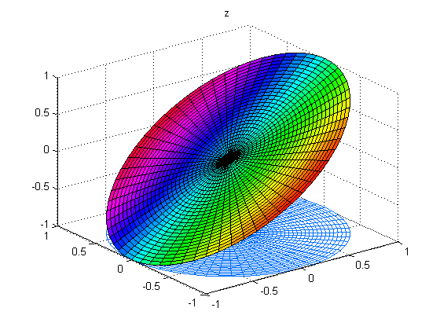
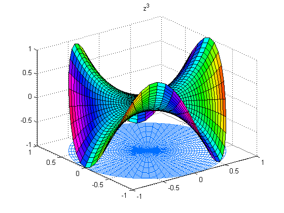
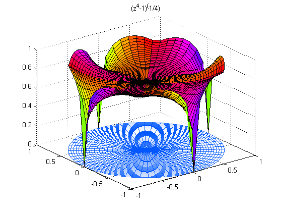
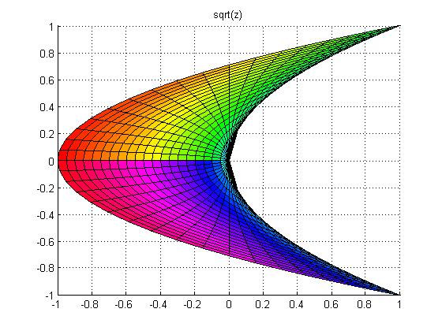
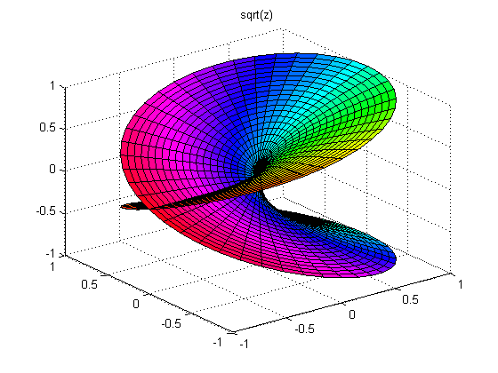

Functions of Complex Variables
MATLAB® can help you perform some very interesting manipulations on complex variable.
Let f(z) be a function of a complex variable. Consider the domain formed by the unit disc (displayed below in polar coordinates). The height of the surface is the real part, REAL(f(z)). The color of the surface is the imaginary part, IMAG(f(z)). The color map varies the hue in the HSV color model.
CPLXMAP plots a function of a complex variable. It has the syntax CPLXMAP(z,f(z),bound), where z is the domain, and f(z) is the mapping that generates the range.
CPLXGRID generates a polar coordinate complex grid. Z = CPLXGRID(m) is an (m+1)-by-(2*m+1) complex polar grid.
colormap(hsv(64))
z = cplxgrid(30);
cplxmap(z,z)
title('z')
 f(z) = z^3. Three maxima at the cube roots of 1.
cplxmap(z,z.^3)
title('z^3')
 f(z) = (z^4-1)^(1/4). Four zeros at the fourth roots of 1.
cplxmap(z,(z.^4-1).^(1/4));
title('(z^4-1)^(1/4)')
 f(z) = 1/z. A simple pole at the origin.
cplxmap(z,1./(z+eps*(abs(z)==0)),5*pi);
title('1/z')

f(z) = atan(2*z). Branch cut singularities at +-i/2.
cplxmap(z,atan(2*z),1.9)
title('atan(2*z)')

f(z) = z^1/2. Viewed from the negative imaginary axis.
axis('auto') cplxroot(2) view(0,0) title('sqrt(z)')
Another view for f(z) = z^1/2. The Riemann surface for the square root.
view(-37.5,30)
cplxroot(2)
title('sqrt(z)')
 f(z) = z^1/3. The Riemann surface for the cube root.
cplxroot(3)
title('z^(1/3)')